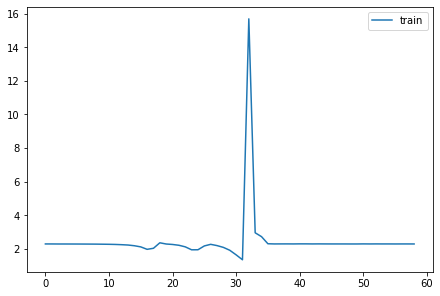

import torch.nn.functional as F,matplotlib as mpl
from pathlib import Path
from operator import attrgetter,itemgetter
from contextlib import contextmanager
from torch import tensor,nn,optim
import torchvision.transforms.functional as TF
from datasets import load_dataset
from fastcore.test import test_close
torch.set_printoptions(precision=2, linewidth=140, sci_mode=False)
mpl.rcParams['figure.constrained_layout.use'] = True
import logging
logging.disable(logging.WARNING)This is not my content it’s a part of Fastai’s From Deep Learning Foundations to Stable Diffusion course. I add some notes for me to understand better thats all. For the source check Fastai course page.
Activations, hooks and histograms.
Activation stats
::: {.cell 0=‘e’ 1=‘x’ 2=‘p’ 3=‘o’ 4=‘r’ 5=‘t’}
from __future__ import annotations
import random,math,torch,numpy as np,matplotlib.pyplot as plt
import fastcore.all as fc
from functools import partial
from miniai.datasets import *
from miniai.learner import *:::
::: {.cell 0=‘e’ 1=‘x’ 2=‘p’ 3=‘o’ 4=‘r’ 5=‘t’}
def set_seed(seed, deterministic=False):
torch.use_deterministic_algorithms(deterministic)
torch.manual_seed(seed)
random.seed(seed)
np.random.seed(seed):::
x,y = 'image','label'
name = "fashion_mnist"
dsd = load_dataset(name)
bs = 1024
@inplace
def transformi(b): b[x] = [TF.to_tensor(o) for o in b[x]]
tds = dsd.with_transform(transformi)
dls = DataLoaders.from_dd(tds, bs, num_workers=4)
dt = dls.trainBaseline
def conv(ni, nf, ks=3, act=True):
res = nn.Conv2d(ni, nf, stride=2, kernel_size=ks, padding=ks//2)
if act: res = nn.Sequential(res, nn.ReLU())
return res
def cnn_layers():
return [
conv(1 ,8, ks=5), #14x14
conv(8 ,16), #7x7
conv(16,32), #4x4
conv(32,64), #2x2
conv(64,10, act=False), #1x1
nn.Flatten()]We want to train quickly, so that means training at a high learning rate.
from torcheval.metrics import MulticlassAccuracymetrics = MetricsCB(accuracy=MulticlassAccuracy())
cbs = [TrainCB(), DeviceCB(), metrics, ProgressCB(plot=True)]def fit(model, epochs=1, xtra_cbs=None):
learn = Learner(model, dls, loss_func=F.cross_entropy, lr=0.6, cbs=cbs+fc.L(xtra_cbs))
learn.fit(epochs)
return learnset_seed(1)
learn = fit(nn.Sequential(*cnn_layers()))| accuracy | loss | epoch | train |
|---|---|---|---|
| 0.208 | 2.243 | 0 | train |
| 0.204 | 2.165 | 0 | eval |
Hooks
Manual insertion
class SequentialModel(nn.Module):
def __init__(self, *layers):
super().__init__()
self.layers = nn.ModuleList(layers)
self.act_means = [[] for _ in layers]
self.act_stds = [[] for _ in layers]
def __call__(self, x):
for i,l in enumerate(self.layers):
x = l(x)
self.act_means[i].append(to_cpu(x).mean())
self.act_stds [i].append(to_cpu(x).std ())
return x
def __iter__(self): return iter(self.layers)set_seed(1)
model = SequentialModel(*cnn_layers())
learn = fit(model)| accuracy | loss | epoch | train |
|---|---|---|---|
| 0.247 | 2.110 | 0 | train |
| 0.376 | 1.659 | 0 | eval |
for l in model.act_means: plt.plot(l)
plt.legend(range(5));for l in model.act_stds: plt.plot(l)
plt.legend(range(5));Pytorch hooks
Hooks are PyTorch object you can add to any nn.Module. A hook will be called when a layer, it is registered to, is executed during the forward pass (forward hook) or the backward pass (backward hook). Hooks don’t require us to rewrite the model.
set_seed(1)
model = nn.Sequential(*cnn_layers())A hook is attached to a layer, and needs to have a function that takes three arguments: module, input, output. Here we store the mean and std of the output in the correct position of our list.
act_means = [[] for _ in model]
act_stds = [[] for _ in model]def append_stats(i, mod, inp, outp):
act_means[i].append(to_cpu(outp).mean())
act_stds [i].append(to_cpu(outp).std())for i,m in enumerate(model): m.register_forward_hook(partial(append_stats, i))fit(model)| accuracy | loss | epoch | train |
|---|---|---|---|
| 0.263 | 2.091 | 0 | train |
| 0.164 | 2.245 | 0 | eval |
<miniai.learner.Learner>for o in act_means: plt.plot(o)
plt.legend(range(5));Hook class
We can refactor this in a Hook class. It’s very important to remove the hooks when they are deleted, otherwise there will be references kept and the memory won’t be properly released when your model is deleted.
::: {.cell 0=‘e’ 1=‘x’ 2=‘p’ 3=‘o’ 4=‘r’ 5=‘t’}
class Hook():
def __init__(self, m, f): self.hook = m.register_forward_hook(partial(f, self))
def remove(self): self.hook.remove()
def __del__(self): self.remove():::
def append_stats(hook, mod, inp, outp):
if not hasattr(hook,'stats'): hook.stats = ([],[])
acts = to_cpu(outp)
hook.stats[0].append(acts.mean())
hook.stats[1].append(acts.std())set_seed(1)
model = nn.Sequential(*cnn_layers())hooks = [Hook(l, append_stats) for l in model[:5].children()]learn = fit(model)| accuracy | loss | epoch | train |
|---|---|---|---|
| 0.247 | 2.122 | 0 | train |
| 0.397 | 1.456 | 0 | eval |
for h in hooks:
plt.plot(h.stats[0])
h.remove()
plt.legend(range(5));A Hooks class
class DummyCtxMgr:
def __enter__(self, *args):
print("let's go!")
return self
def __exit__ (self, *args): print("all done!")
def hello(self): print("hello.")with DummyCtxMgr() as dcm: dcm.hello()let's go!
hello.
all done!class DummyList(list):
def __delitem__(self, i):
print(f"Say bye to item {i}")
super().__delitem__(i)dml = DummyList([1,3,2])
dml[1, 3, 2]del(dml[2])
dmlSay bye to item 2[1, 3]::: {.cell 0=‘e’ 1=‘x’ 2=‘p’ 3=‘o’ 4=‘r’ 5=‘t’}
class Hooks(list):
def __init__(self, ms, f): super().__init__([Hook(m, f) for m in ms])
def __enter__(self, *args): return self
def __exit__ (self, *args): self.remove()
def __del__(self): self.remove()
def __delitem__(self, i):
self[i].remove()
super().__delitem__(i)
def remove(self):
for h in self: h.remove():::
set_seed(1)
model = nn.Sequential(*cnn_layers())with Hooks(model, append_stats) as hooks:
fit(model)
fig,axs = plt.subplots(1,2, figsize=(10,4))
for h in hooks:
for i in 0,1: axs[i].plot(h.stats[i])
plt.legend(range(6));| accuracy | loss | epoch | train |
|---|---|---|---|
| 0.166 | 2.475 | 0 | train |
| 0.100 | 2.303 | 0 | eval |

HooksCallback
::: {.cell 0=‘e’ 1=‘x’ 2=‘p’ 3=‘o’ 4=‘r’ 5=‘t’}
class HooksCallback(Callback):
def __init__(self, hookfunc, mod_filter=fc.noop, on_train=True, on_valid=False, mods=None):
fc.store_attr()
super().__init__()
def before_fit(self, learn):
if self.mods: mods=self.mods
else: mods = fc.filter_ex(learn.model.modules(), self.mod_filter)
self.hooks = Hooks(mods, partial(self._hookfunc, learn))
def _hookfunc(self, learn, *args, **kwargs):
if (self.on_train and learn.training) or (self.on_valid and not learn.training): self.hookfunc(*args, **kwargs)
def after_fit(self, learn): self.hooks.remove()
def __iter__(self): return iter(self.hooks)
def __len__(self): return len(self.hooks):::
hc = HooksCallback(append_stats, mod_filter=fc.risinstance(nn.Conv2d))set_seed(1)
model = nn.Sequential(*cnn_layers())
fit(model, xtra_cbs=[hc]);| accuracy | loss | epoch | train |
|---|---|---|---|
| 0.205 | 2.232 | 0 | train |
| 0.100 | 2.305 | 0 | eval |
fig,axs = plt.subplots(1,2, figsize=(10,4))
for h in hc:
for i in 0,1: axs[i].plot(h.stats[i])
plt.legend(range(6));Histograms
::: {.cell 0=‘e’ 1=‘x’ 2=‘p’ 3=‘o’ 4=‘r’ 5=‘t’}
def append_stats(hook, mod, inp, outp):
if not hasattr(hook,'stats'): hook.stats = ([],[],[])
acts = to_cpu(outp)
hook.stats[0].append(acts.mean())
hook.stats[1].append(acts.std())
hook.stats[2].append(acts.abs().histc(40,0,10)):::
set_seed(1)
model = nn.Sequential(*cnn_layers())
hc = HooksCallback(append_stats, mod_filter=fc.risinstance(nn.Conv2d))
fit(model, xtra_cbs=[hc]);| accuracy | loss | epoch | train |
|---|---|---|---|
| 0.213 | 2.379 | 0 | train |
| 0.100 | 21.771 | 0 | eval |
::: {.cell 0=‘e’ 1=‘x’ 2=‘p’ 3=‘o’ 4=‘r’ 5=‘t’}
# Thanks to @ste for initial version of histgram plotting code
def get_hist(h): return torch.stack(h.stats[2]).t().float().log1p():::
fig,axes = get_grid(len(hc), figsize=(11,5))
for ax,h in zip(axes.flat, hc):
show_image(get_hist(h), ax, origin='lower')::: {.cell 0=‘e’ 1=‘x’ 2=‘p’ 3=‘o’ 4=‘r’ 5=‘t’}
def get_min(h):
h1 = torch.stack(h.stats[2]).t().float()
return h1[0]/h1.sum(0):::
fig,axes = get_grid(len(hc), figsize=(11,5))
for ax,h in zip(axes.flatten(), hc):
ax.plot(get_min(h))
ax.set_ylim(0,1)ActivationStats
::: {.cell 0=‘e’ 1=‘x’ 2=‘p’ 3=‘o’ 4=‘r’ 5=‘t’}
class ActivationStats(HooksCallback):
def __init__(self, mod_filter=fc.noop): super().__init__(append_stats, mod_filter)
def color_dim(self, figsize=(11,5)):
fig,axes = get_grid(len(self), figsize=figsize)
for ax,h in zip(axes.flat, self):
show_image(get_hist(h), ax, origin='lower')
def dead_chart(self, figsize=(11,5)):
fig,axes = get_grid(len(self), figsize=figsize)
for ax,h in zip(axes.flatten(), self):
ax.plot(get_min(h))
ax.set_ylim(0,1)
def plot_stats(self, figsize=(10,4)):
fig,axs = plt.subplots(1,2, figsize=figsize)
for h in self:
for i in 0,1: axs[i].plot(h.stats[i])
axs[0].set_title('Means')
axs[1].set_title('Stdevs')
plt.legend(fc.L.range(self)):::
astats = ActivationStats(fc.risinstance(nn.Conv2d))set_seed(1)
model = nn.Sequential(*cnn_layers())
fit(model, xtra_cbs=[astats]);| accuracy | loss | epoch | train |
|---|---|---|---|
| 0.208 | 2.199 | 0 | train |
| 0.289 | 1.695 | 0 | eval |
astats.color_dim()astats.dead_chart()astats.plot_stats()Export -
import nbdev; nbdev.nbdev_export()